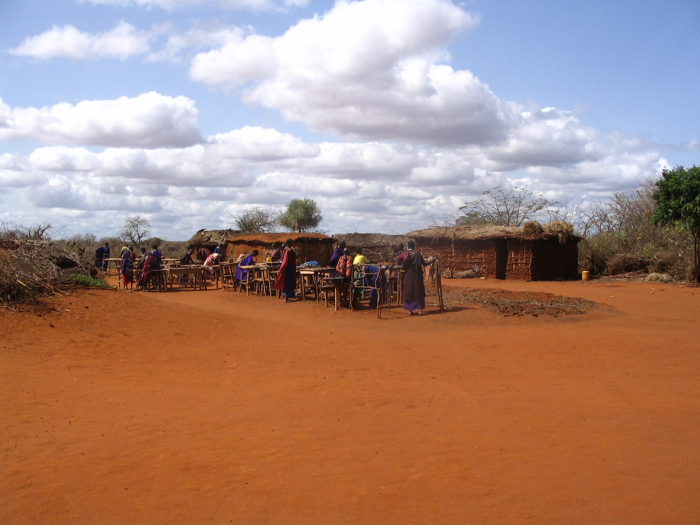
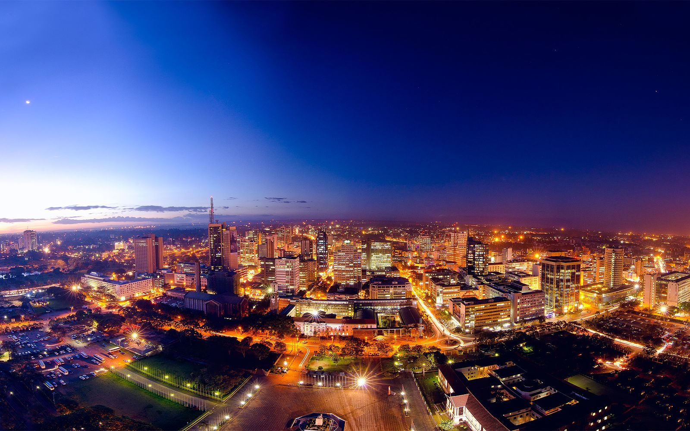
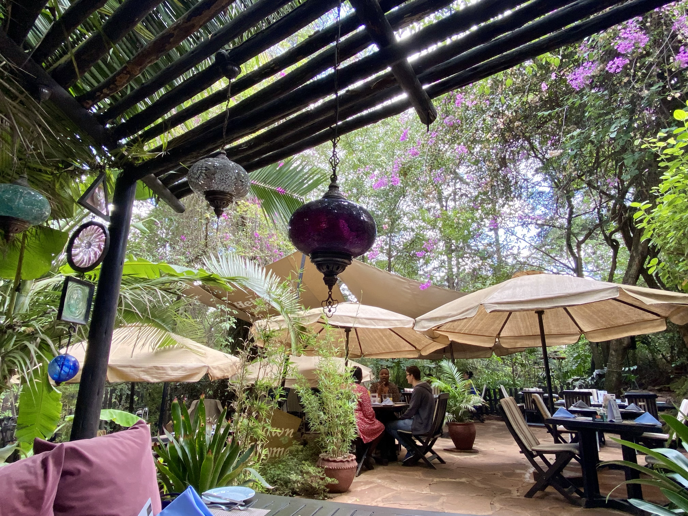
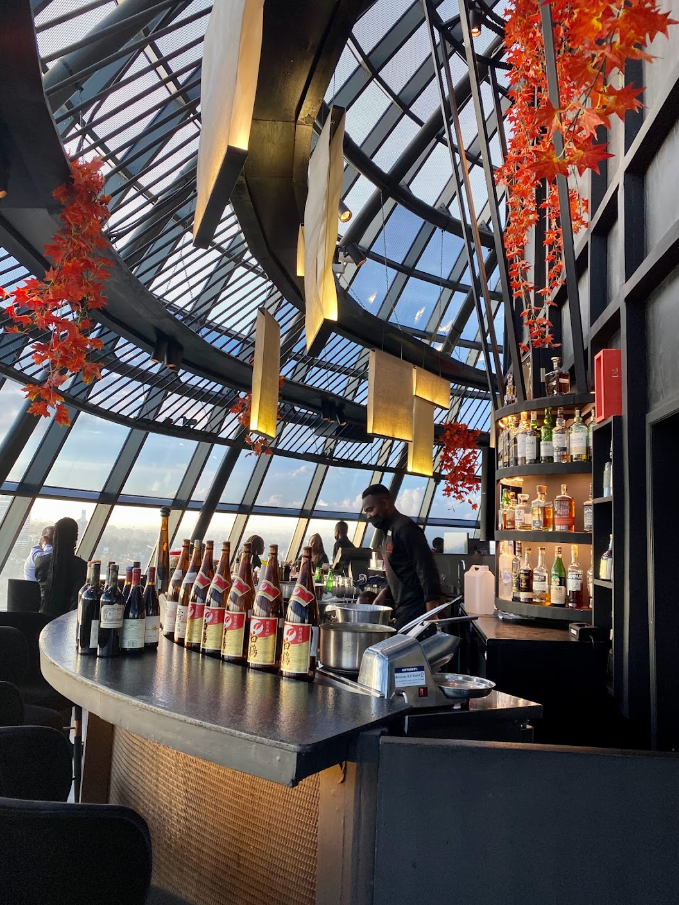
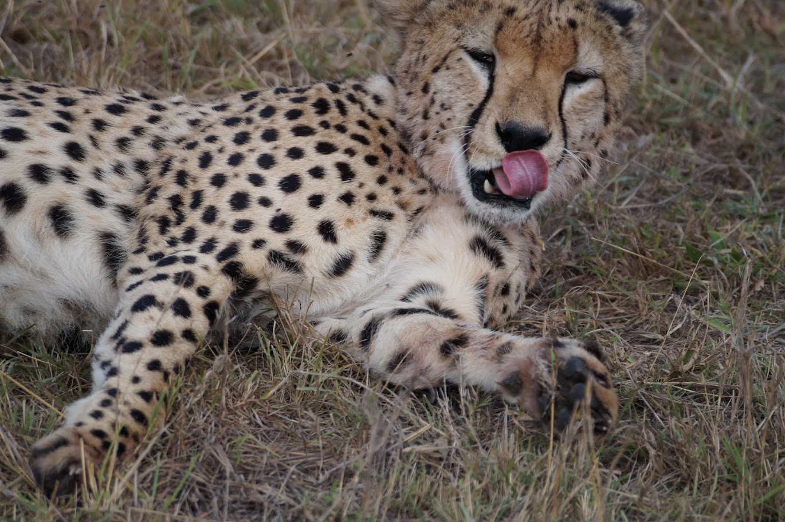
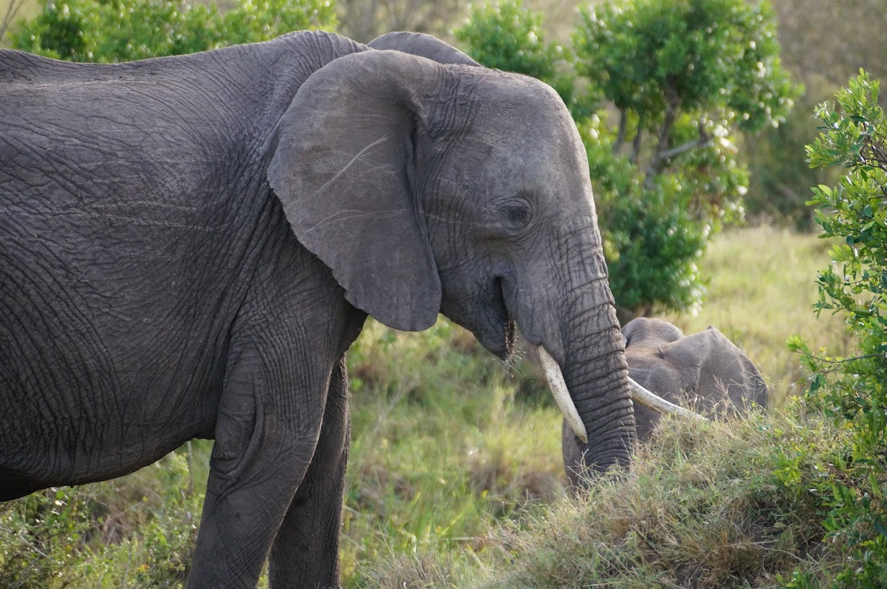
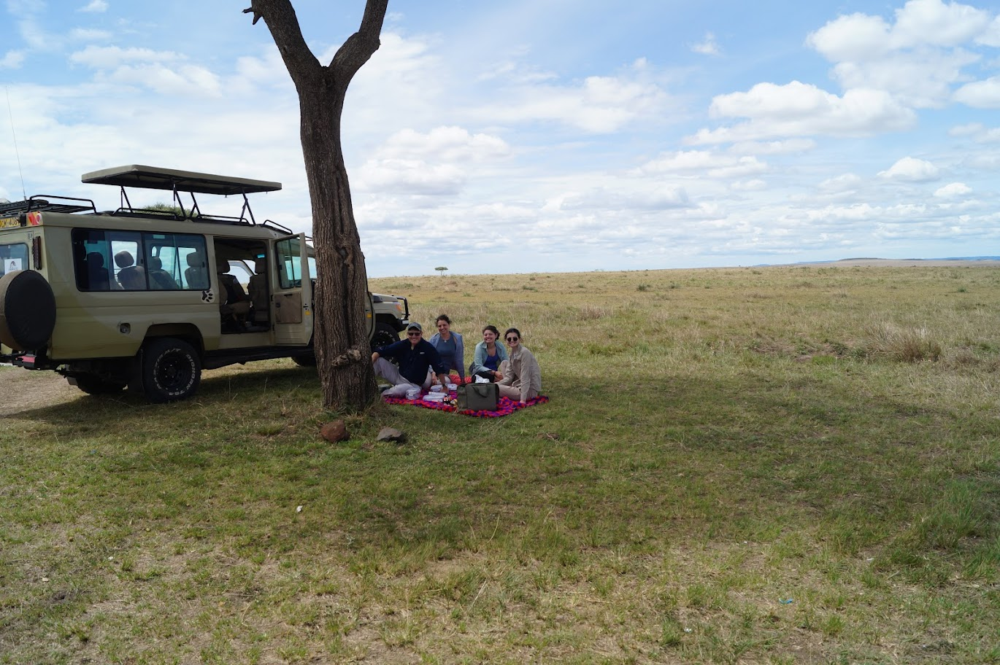
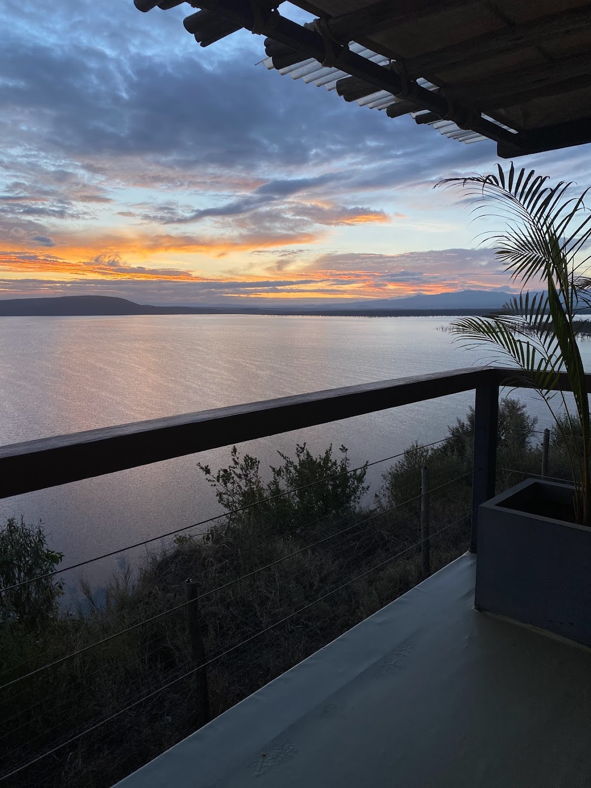
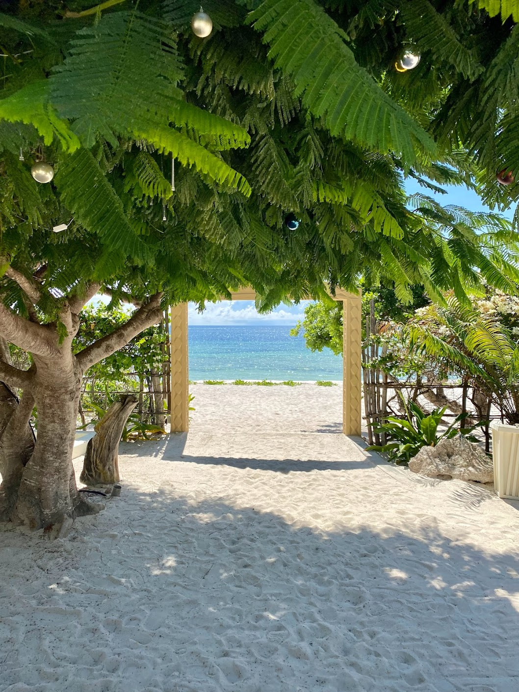

AFRICA
My most recent travels led me to Kenya to visit my sister! After a heartwarming reunion, we started our adventure and learning about Kenya. Kenyan landscapes reflect their history and determinded people. In the 1920s, British forces entered Kenya and forced systems on the people, but in 1963, Kenya gained independence. The cities show the impact of colonization, and in the rural areas, the Maasai People continue to hold onto the country's roots.
 Again, we packed our vacations with amazing adventures. During the first few days, we ate our way through Nairobi. We enjoyed About Thyme, a brunch jem hidden among greenery, and Inti, an incredible restaurant that overlooks Nairobi's skyline. Next, we spent our days taking safari game rides! The Big Five animals are lions, hippos, rinos, elephants, and leopards. Luckily, we saw all of them and more! The second half of the trip revolved around water. We drove to Lake Nakuru and saw more hippos, pink flamingos, and beautiful sunrises. Finally, we flew to the coast to see the Indian Ocean. In Watamu, we relaxed on the beach, snorkled with colorful fish, and had fun at the Lichthaus, a restaurant and bar over the water.
      